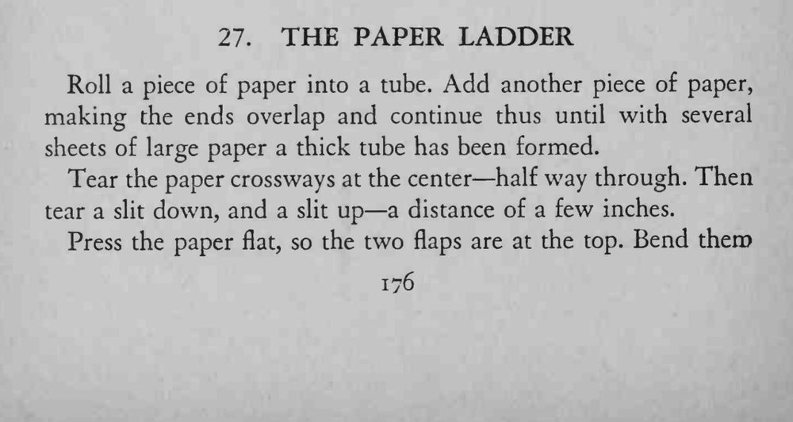
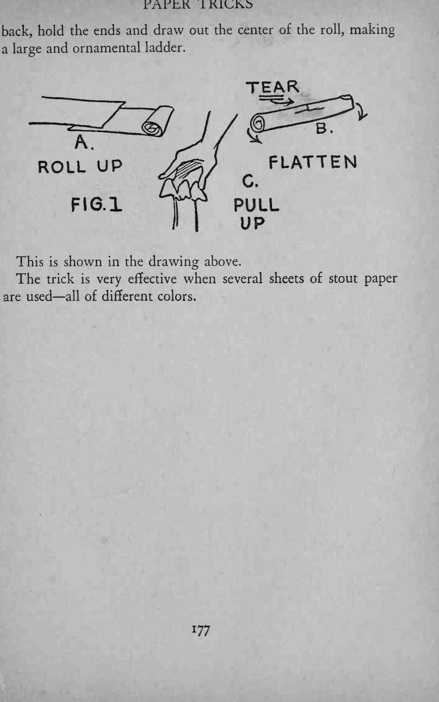

几张纸卷成一根粗纸筒，从中撕开几道口子，压平后捏住两端一抽，纸筒便展开成一架漂亮的大纸梯。
撕纸要慢慢来、力度均匀；用不同颜色的纸叠卷，展开后的梯子更好看。


Roll a piece of paper into a tube. Add another piece of paper, making the ends overlap and continue thus until with several sheets of large paper a thick tube has been formed. Tear the paper crossways at the center half way through. Then tear a slit down, and a slit up a distance of a few inches. Press the paper flat, so the two flaps are at the top. Bend them back, hold the ends and draw out the center of the roll, making a large and ornamental ladder. r FIG.l PULL This is shown in the drawing above. The trick is very effective when several sheets of stout paper are used all of different colors.